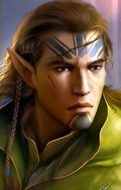
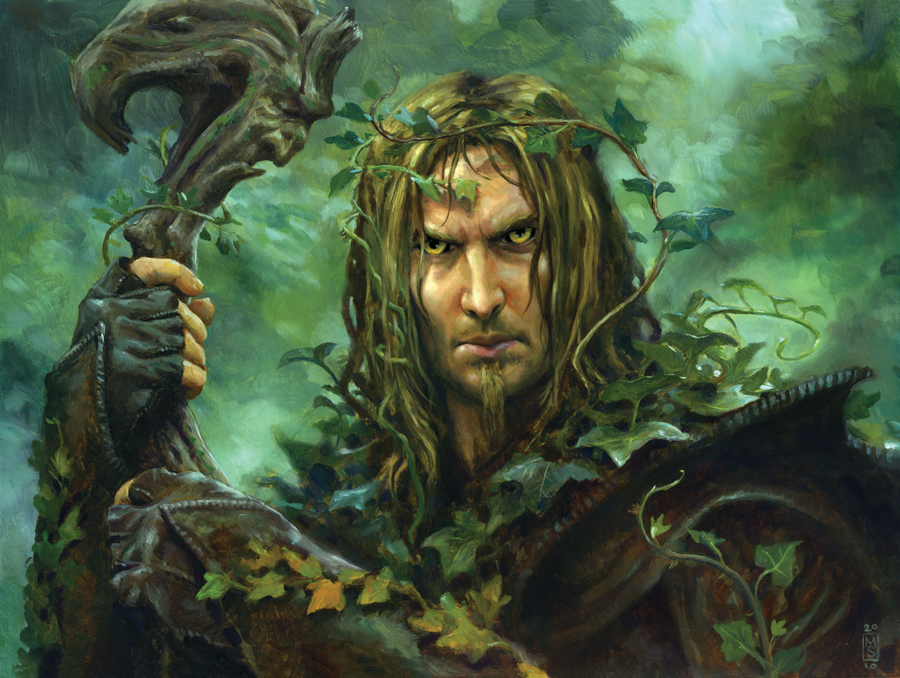
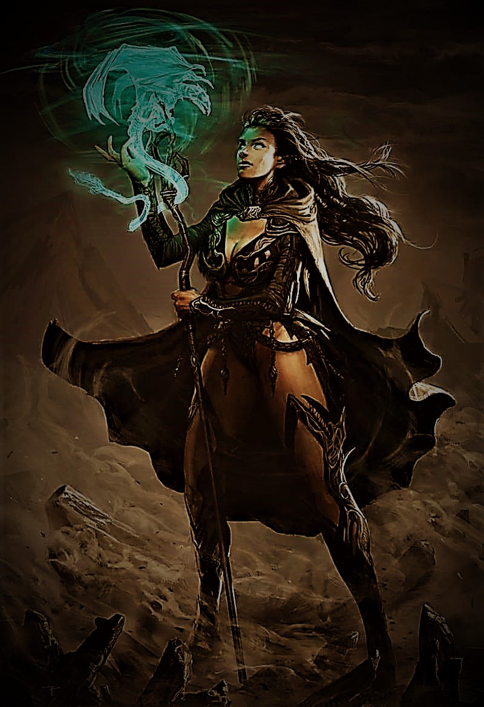
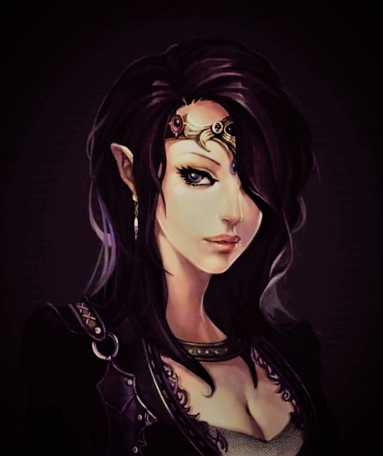
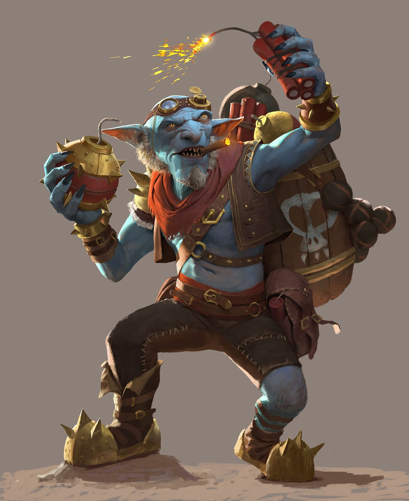
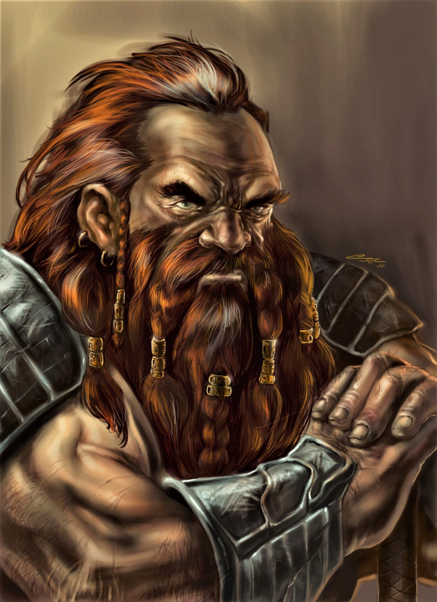
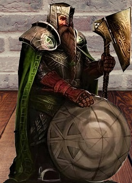

Amiri is an Arctic half-elf Barbarian from the Bearpelt Kellid Tribe that has elemental sorceress powers drawn from the goddess Desna. She has her father’s red hair and piercing blue eyes, and her mother’s snowcaster skin as white as fresh fallen snow. Her parents Kildar and Illandra decided to hide her elvish heritage by tieing a cord around her ears due to the xenophobic nature of the secluded Kellid Tribe and the Illverani Elves. Her mother taught her elvish, her father Hallit, and her father and mother began to teach her the Common they knew.
Amiri’s mother and father could not help her in controlling her powers so she set off on her journey with her parents’ blessings and their gifts of her Mother’s tome of languages and her Father’s large bastard sword. They agreed that once she fulfilled the destiny Desna had in store for her and had control of her powers once more she would meet them to perhaps start a new Kellid following of their own.
Father's sword is an oversized bastard sword. Mother's tome is silver embossed with a quetzal bird on it and amber and sapphire stones worked into the design
Enariel

Enariel is the most aged of the group bosting 300 years alive and counting. A man with not 1 but 2 bows and a bear he takes into every fight. With an aptitude for traps and hunting he has no issue helping provide food for the BB8 on adventures. The sniper like shots landing true more times than not he and Thuviel are a force to be reckoned with.
Eris

My name is Eris. I am friend of all things plant related and live the outdoors. I was raised by trees and keep 3 little leauge familiers on me at all times. Together with my magical sword "Excalibore" I protect my campanions and keep them healthy and healed as best I can.
Eris is the self proclaimed leader of the BB8.
Also he claims to be dating Amiri.
Although he is netorioulsy bad at reading people.
Shyvana

Shyvana is the epicenter of innocence on the team. She weilds magics with unknown sorces to the team and possily even herself. As of now Shyvana focuses on supprting her team with some buffs and healing the undead they fight to keep things interesting. She is the best talker on the team with her perky personality and seductive tendancies, although she has no idea she is being seductive when she is.
Taaztunk

Well what can say for Taaz, when he manages to hit something it goes BOOM!! Taaztunk also has the ability to mix up great poisions. For the time being he seems to get too stressed out in combat and handels himself much better outside of combat.
Whukrin

Whukrin is a dwarf that takes pride in his ability to protect others. He willing interposes himself between his allies and the danger they face. Aspiring to learn some magic to help with this he has taken to carrying a spell book around. After years at the forge under the mountain he is a master craftsman, and takes great care of his equipment. After being chased from under the mountain by an undead army he has vowed to himslef and his family he will return and avenge his brother. Until that time he will serve as the shield of the BB8. He has started to learn elven and abbysal, trying to teach Amiri common, learning arcane spells, and crafting varrious magical and non-magical items. The roles he has taken outside of combat leaves him with little tie to dwell on his past.